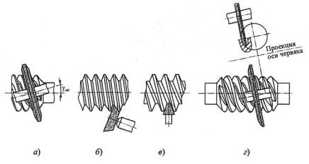
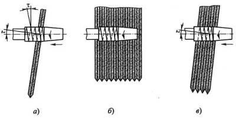
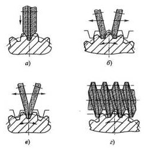
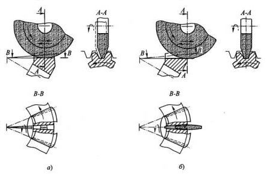
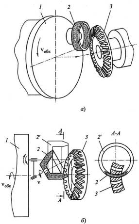
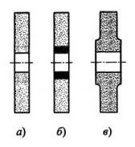
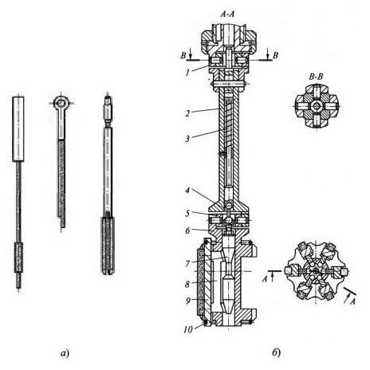

В современном машиностроении применяется большое многообразие конструкций абразивных инструментов. Для большинства из них характерны простота формы, способа установки и крепления и поэтому здесь они подробно не рассматриваются. Однако некоторые из абразивных инструментов требуют более детального рассмотрения.
Круги для шлифования цилиндрических червяков имеют коническую или тороидальную форму
Дисковые шлифовальные круги заправляют на конус с одной или двух сторон. Ось шлифовального круга устанавливают к оси червяка под углом, равным действительному углу подъема линии витка червяка
Чашечные конусные круги имеют прямолинейную образующую конуса и работают торцом круга (б).
Пальцевые конусные круги также имеют прямолинейный профиль. Ось пальцевого круга располагают под прямым углом к оси червяка (в).
Тороидальные круги устанавливают относительно обрабатываемого отверстия таким образом, что ось круга располагается относительно оси червяка под углом, при котором одно из плоских сечений главной поверхности червяка является дугой окружности, совпадающей с образующей тора (г).
Круги для резьбошлифования бывают однониточные и многониточные.
Однониточные круги (а) используют для шлифования боковых сторон профиля витка и дна впадины резьбы.
Многониточные круги (б, в) имеют кольцевые канавки и кроме боковых сторон витков резьбы и дна впадин шлифуют также и вершины. Когда оси круга и заготовки параллельны, то это приводит к пересечению направления ниток резьбы на круге и изделии и, соответственно, к разбивке профиля резьбы (б). Поэтому многониточными кругами, работающими по схеме врезания, точные резьбы с большим углом подъема не шлифуют.
При многониточном врезном шлифовании коротких резьб вначале врезаются с поперечной подачей на полную глубину профиля, а затем задают осевую подачу на один шаг. Таким образом, резьба шлифуется за 1 1/2 ...1 1/3 оборота заготовки. При этом ширина многониточного круга должна быть на 2...3 шага больше длины нарезаемой резьбы.
Шлифование многониточными кругами длинных резьб выполняют с осевой подачей (в). При этом ось круга устанавливают под углом подъема резьбы , предварительно заправив заборную часть заготовки в виде конуса. Первые витки круга прорезают резьбу начерно, следующие витки производят получистовое, а последние - чистовое шлифование.
Точность шлифования многониточными кругами меньше, чем однониточными: отклонения по шагу (Р < 1,0 мм) на длине 25 мм - 0,008 мм, на длине 100 мм - 0,012 мм; отклонение по среднему диаметру резьбы -±0,01 мм; по половине угла профиля - 16'.
Шлифование многониточными кругами более производительно, чем однониточными, но менее точно. Поэтому для высокопроизводительного шлифования длинных точных резьб целесообразно многониточными кругами вести предварительное, а однониточными - окончательное шлифование резьб.
Абразивные инструменты для зубошлифования работают по методам копирования и обкаточного огибания (обката).
Шлифование зубьев прямозубых цилиндрических колес по методу копирования осуществляется фасонным шлифовальным кругом с профилем, соответствующим профилю впадины между зубьями обрабатываемого колеса (а) с последующим делением на каждый зуб колеса. При шлифовании методом обката режущая поверхность круга соответствует профилю нормальной зубчатой рейки, обкатываемой по начальной окружности обрабатываемого колеса. Этим методом пользуются при обкатке одновременно двумя кругами с делением через зуб (б) и на каждый зуб (в), а при непрерывной обкатке - абразивным червяком (г).
Шлифование методом обката осуществляется прямолинейными боковыми сторонами тарельчатых кругов класса точности АА, образующими при обработке профиль прямозубой рейки. Такие круги шлифуют зубья колес узкой полоской шириной 2...3 мм. Поэтому давление и нагрев в зоне резания незначительны, а точность обработки высока. Для предотвращения погрешностей, вызванных износом абразивных кругов, зубошлифовальные станки снабжают приспособлениями для автоматической правки кругов.
Шлифование зубьев колес методом обката абразивным кругом, имеющим червячный профиль, является наиболее прогрессивным. Эти инструменты обеспечивают обработку зубьев термически обработанных цилиндрических колес. При этом червячный профиль круга образуется непосредственно на зубошлифовальном станке накатным роликом или профильным алмазным резцом.
Шлифование прямозубых конических колес производят по методу обката двумя кругами раздельно на каждой стороне впадины зуба (а) или одновременно по двум сторонам впадины зуба (б).
Шлифование колес с криволинейными зубьями осуществляют кругами: чашечно-цилиндрическим; чашечно-коническим.
Шлифование чашечно-цилиндрическим кругом по методу обката (а) заключается в том, что чашечный круг 2, расположенный на люльке станка 1, вращается вокруг своей оси со скоростью резания v и одновременно относительно оси люльки со скоростью обката vобк
При этом конические поверхности круга, расположенные под углом исходного контура, воспроизводят боковые поверхности зуба плсковершинного производящего колеса. Это колесо, имея один материальный зуб в виде активных поверхностей чашечного круга, зацепляясь с заготовкой 3, вышлифовывает в ней профиль впадины. При повторении этого процесса z раз (z - число зубьев нарезаемого колеса) колесо будет вышлифовано полностью. На время перехода шлифования от впадины к впадине круг отводится от заготовки.
При шлифовании чашечно-коническим кругом по методу обката (б) круг 2 имеет в одном осевом сечении профиль, совпадающий с профилем цилиндрического чашечного круга 2'. В сечении А-А плоскостью, проходящей через начальную поверхность, виден рабочий контур абразивного инструмента, очерченный двумя эллипсами. Такой контур имеет меньшую площадь контакта с обрабатываемой поверхностью и наименьшее тепловыделение. Поэтому шлифование чашечно-коническим кругом более производительно, чем чашечно-цилиндрическим кругом и менее опасно с точки зрения появления прижогов.
Для зубошлифования и особенно твердых легированных сталей применяют мягкие шлифовальные круги, так как они не вызывают появления трещин и прижогов. При этом зернистость кругов выбирают в зависимости от модуля шлифуемых колес: чем меньше модуль, тем меньше зернистость.
Круги для высокоскоростного шлифования работают на скоростях 80...120 м/с вместо скоростей 25...35 м/с, имеющих место при обычном шлифовании. Это позволяет увеличить стойкость кругов, повысить производительность обработки, а также точность и качество обработанной поверхности.
При высоких скоростях вращения в шлифовальных кругах возникают большие напряжения, вызываемые центробежной силой. Для повышения прочности таких кругов в одних случаях применяют специальные керамические связки К5 и К6 - для работы со скоростью 60 м/с и К43 и К43Л - для работы со скоростью 80 м/с. В других случаях центральную часть кругов, у отверстия, где возникают максимальные напряжения, упрочняют за счет применения мелкозернистых смесей (а), образующих композицию со связкой, а также за счет запрессовывания втулок из особо прочных материалов: стеклопластиков, металлических колец и т.д. (б). Применяют также круги переменного сечения с утолщением центральной части плавно снижающейся к рабочей части (в). Иногда центральную часть кругов на керамической связке пропитывают термопластичными составами, например эпоксидной смолой и др.
Точность кругов для высокоскоростной обработки должна быть классов АА и А, а неуравновешенность не ниже класса 2 для кругов с рабочей скоростью до 60 м/с и не ниже класса 1 - для кругов, работающих со скоростью 80 м/с.
Хонинговальные головки применяют для окончательной обработки отверстий диаметром 1...1500 мм и глубиной до 25 000 мм. При этом точность обработанных отверстий достигает JT5...6, а шероховатость Ra 0,32...0,08. Такие высокие результаты объясняются тем, что в отличие от шлифования процесс хонингования характеризуется: а) большой площадью контакта брусков с обрабатываемой поверхностью; б) малой величиной давления брусков и низкой скоростью резания; в) значительным количеством одновременно работающих зерен; г) низкой температурой в зоне резания.
В зависимости от диаметра обрабатываемого отверстия хонинговальные головки применяют: малых диаметров (1...5 мм) (а); средних диаметров (10...250 мм) (б); больших диаметров (250... 1500 мм) .
При хонинговании головка вращается с окружной скоростью vокр и совершает возвратно-поступательное перемещение вдоль оси обрабатываемого отверстия со скоростью vвп. При этом осуществляется непрерывный разжим брусков - радиальная подача.
Хонинговальные головки должны обеспечивать: а) высокую точность размеров и формы обрабатываемого отверстия; б) возможность самоустанавливания головки и абразивных брусков соответственно в случае несовпадения осей обрабатываемого отверстия и шпинделя станка, а также для исправления формы обрабатываемого отверстия и компенсации неравномерного изнашивания брусков; в) возможность сжатия абразивных брусков после остановки хонинговальной головки.
В хонинговальных головках должен быть предусмотрен специальный механизм, позволяющий осуществлять радиальную подачу (разжим) брусков. Привод такого механизма может быть: ручной, механический или гидравлический. Последний является наиболее эффективным, так как обеспечивает постоянное давление на бруски и большую производительность.
Разжим брусков хонинговальных головок осуществляют с помощью конусов, которые упираются в колодки с закрепленными на них абразивными брусками. В практике чаще всего встречаются головки с двумя конусами . Головки с тремя и более конусами применяются для обработки глубоких отверстий.
Конструкция хонинговальной головки с шарнирами Гука l и 5 показана на рисунке позиция (б). У этой головки привод механизма разжима встроен в шпиндельную бабку станка и соединен со стержнем 2. Поступательное движение от привода передается толкателю 3 и через шарнирный поводок 4 на корпус хонинговальной головки б, внутри которого перемещается разжимной конус 7. Последний передает давление на конусные планки 8 и разжимает колодки 9 с брусками. При снятии рабочего давления пружина приподнимает толкатель 3, и колодки с брусками сжимаются под действием кольцевых пружин 10.
Крепление абразивных брусков к колодкам осуществляют механическим способом, приклеиванием или припаиванием . В последнее время абразивные бруски применяются сравнительно редко ввиду их относительно низкой стойкости. Чаще всего применяют алмазные и эльборовые бруски. Так, например, при обработке заготовок из серого чугуна и термообработанной стали рекомендуются бруски из синтетических алмазов АС4, АС6 и из эльбора ЛО, ЛП. Зернистость алмазных брусков для предварительной обработки - 250/200...125/100, а для окончательной обработки - 100/80...50/40. Алмазные бруски изготавливают на металлических Ml, МО13 и органических Б1, ТО2 связках. Зернистость эльборовых брусков для предварительной обработки - 25...12, а для окончательной обработки - 10...4. Концентрация: для предварительной обработки 100% и реже 50%, для окончательной обработки 100...200 Эльборовые бруски изготавливают на керамической С10 и органической Б1 связках. Применяют также эльборовые бруски на керамической связке твердостью СТ, Т и структуры 5...8.